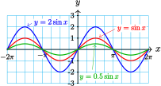

Example 7.1
Compare the graphs of \(f(x)=2\sin x\) and \(g(x)=0.5\sin x\) with the graph of \(y=\sin x\text{.}\)
Solution
With your calculator set in radian mode, graph the three functions in the ZTrig window (press ZOOM 7). The graphs are shown below.

All three graphs have the same period (\(2\pi\)) and midline (\(y=0\)), but the graph of \(f\) has amplitude 2, and the graph of \(g\) has amplitude 0.5.